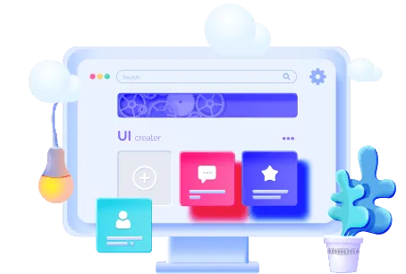
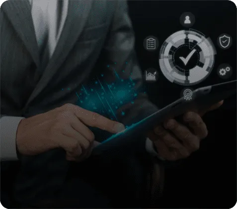

As a leading UI UX design service company, we specialize in
crafting visually engaging and user-friendly interfaces that leave a lasting
impression.
We are Trusted by
10+
Years of Experience
1000+
Products Delivered
25+
Countries Served
250+
Tech Enthusiast
Our Seamless UI UX Design and
Development Services
Hire UI UX designers who are dedicated to making your brand's
vision a reality, ensuring your project designs are not
only visually stunning but also highly intuitive, providing
users with a seamless experience.
Consulting Services
Our team provides expert consulting services, guiding you
through every step of the design process. Whether it's mobile
app UI design or web design we assist you with the best
expertise.
Prototyping
We create prototypes to ensure usability, where we
meticulously optimize page layouts, strategically arranging
elements for an intuitive and responsive digital experience.
Web Design
With our responsive web design services, we transform your
online presence, ensuring that your web UI UX design is
visually stunning, highly functional, and user-friendly.
Mobile App Design
Our expertise extends to mobile UI UX design for both iOS and
Android platforms, ensuring that your applications deliver
exceptional usability to retain users.
Wireframing
Wireframing is a crucial element of UI UX design and
development services, mapping out the structure and content of
your applications, and providing a clear blueprint for
development.
UI Design Services
Apptunix specializes in UI design, making sure that the user
interfaces of your applications are designed for an efficient
and enjoyable user experience.
Unlock the Potential of Your Next
Big Project with Our Highly Creative
UI/UX Designers.
UI/UX Design Process
As a leading UI UX design services company we meticulously
follow the steps to fine-tune every aspect of your project,
ensuring that the user experience is finely crafted to meet
your business goals and exceed expectations.
Define
During the UI/UX design discovery phase, we gather valuable
insights from user and stakeholder interviews. This helps us
understand user information, and technical constraints, and
align our efforts with your business goals and requirements.
Understanding the problem
Project scope
Technical restraints
Value proposition
Business goals
User Research
Our in-depth user research is instrumental in understanding
what users expect from your mobile app UI design. We create
user journeys to gain a deeper insight into behavioral aspects
and improve workflows.
User personas
User scenarios
Competitive research
User experience map
Analytics and Discovery
During this stage, our UI UX design agency focuses on data
analysis, creating user profiles, handpicking features, and
defining your mobile UI UX design requirements to ensure we
have a clear and well-informed strategy in place.
Data analysis
User profiles
prioritizing features
Defining project requirements
Create
We meticulously organize the wireframing, structuring usable
content from complex sets of information. This involves
creating a well-organized outline for visual design, defining
information relationships, and establishing smooth navigation.
Wireframes
Prototypes
Visual Design
Data Visualization
Test
We prioritize usability testing, ensuring that the interface
is design-driven, and fosters increased customer engagement.
We take ergonomic considerations into account and re-engineer
designs based on client feedback in the testing phase.
Usability testing
User testing
QA and UX Audit
Accessibility Evaluation
Editing and Fixing
Ready to Transform Your Digital Experience?
Let Apptunix Create Exceptional Mobile UI/UX
Designs for Your App.

Why Leverage Apptunix’s Expertise for UI
UX Design Services?
We take delight in performing mobile wonders. Apptunix is a
group of talented developers, designers,
and marketing experts with a reputation for getting things
done.
2x faster UI UX Designing
2x faster UI UX Designing
Apptunix brings the advantage of swift UI/UX designing to
your projects, ensuring that you can take your concepts from
the drawing board to implementation in half the time, saving
you valuable resources and time.
Holistic Approach
Holistic Approach
Our approach to UI/UX design is holistic, encompassing the
entire user journey and experience. We don't just create
visually appealing interfaces but also ensure that the
overall user experience is intuitive and engaging.

100% Customizable Solutions
100% Customizable Solutions
At Apptunix, being the best UI UX design agency, our
responsive web design solutions are fully customizable, and
tailored to your specific needs and branding, ensuring that
your digital presence is unique and impactful.
All-Inclusive UI UX Design
and Development Services
All-Inclusive UI UX Design
and Development Services
We offer a comprehensive range of UI design services that
cover every aspect of the user interface and experience.
From wireframing to prototyping, we provide end-to-end
services, making us your one-stop solution for all your
UI/UX needs.